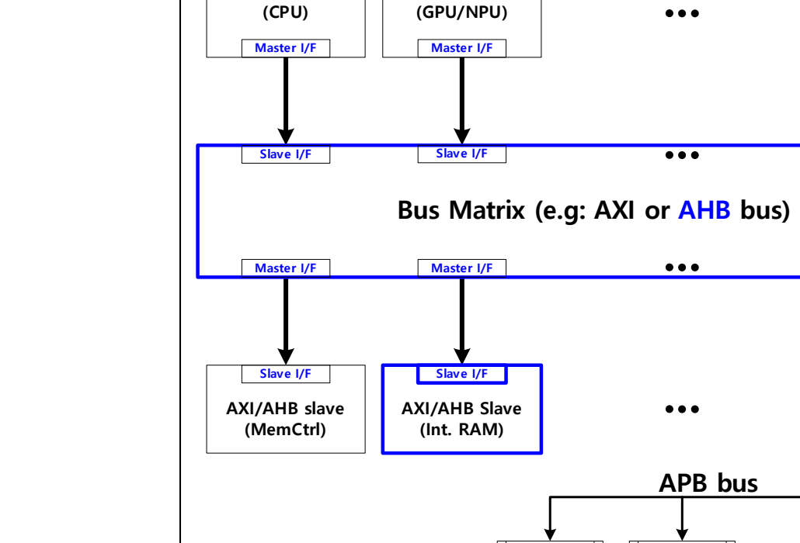
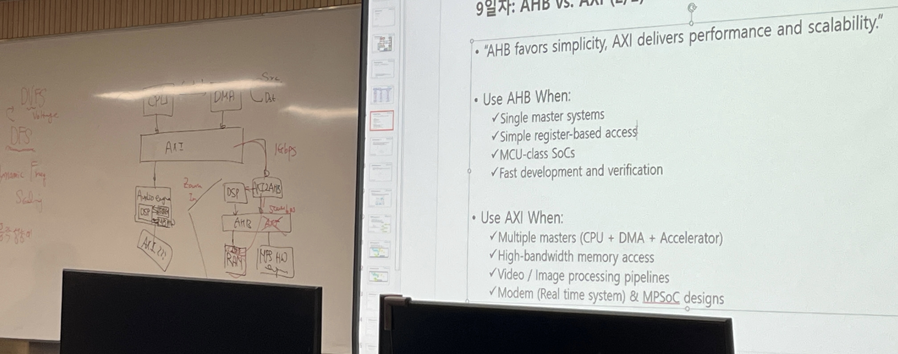
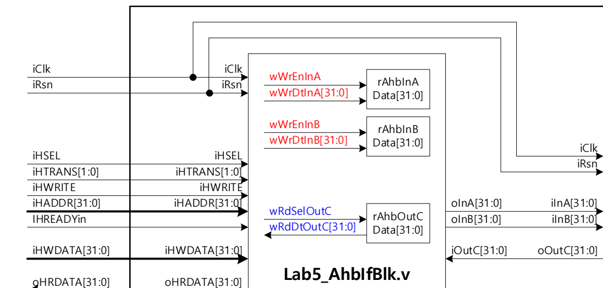
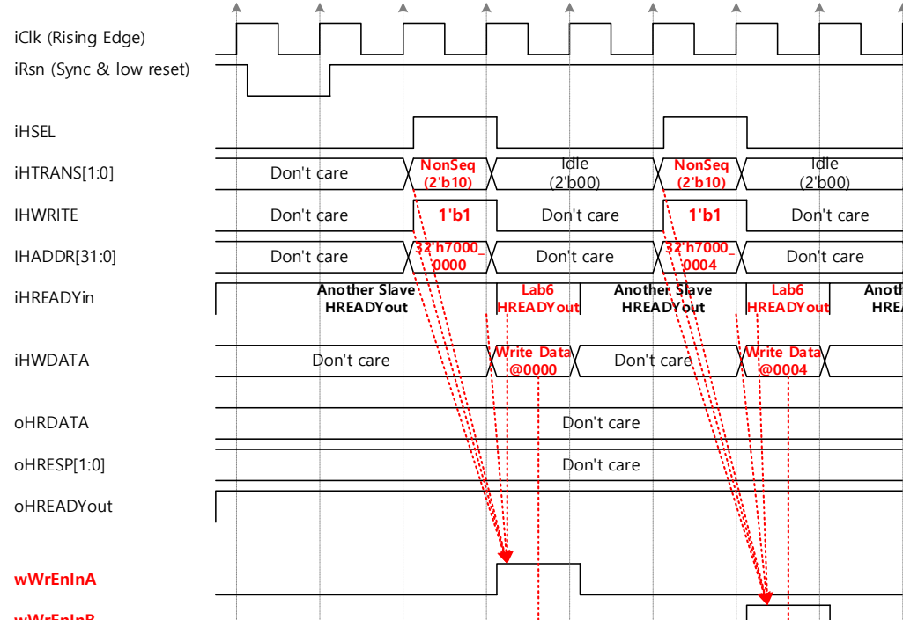
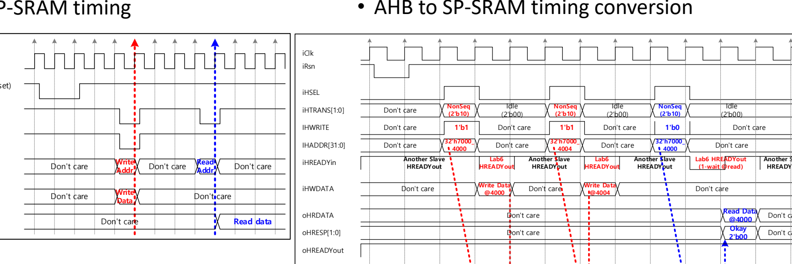
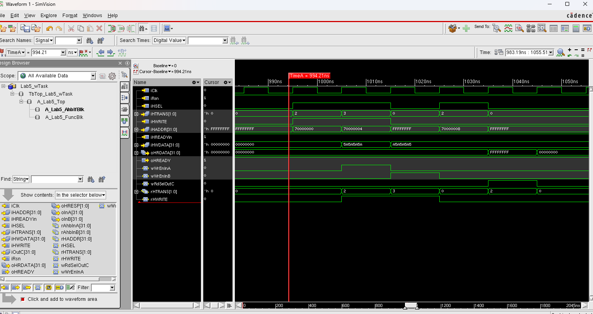

2. AHB Pipelined Bus
AHB(Advanced High-performance Bus)는 APB보다 빠른 SoC 내부 데이터 이동을 다루기 위한 bus다. APB가 setup-enable 두 단계로 단순 register 제어를 처리한다면, AHB는 address phase와 data phase를 겹쳐서 다음 전송을 미리 준비한다. 이 페이지는 AHB가 왜 pipeline bus인지, RTL에서 phase를 어떻게 latch하는지, SRAM read wait-state를 어떻게 구현했는지까지 정리한다.
2.1 AHB는 어떤 bus인가
AHB는 APB보다 높은 성능을 목표로 하는 system bus다. 주변장치 register 몇 개를 천천히 읽고 쓰는 것이 아니라, 내부 RAM, memory-mapped buffer, 하드웨어 IP 사이의 더 빠른 데이터 이동을 처리하는 데 쓰인다. AHB에도 master, decoder, slave, response path가 있고, 주소 범위에 따라 어떤 slave가 선택되는지 결정된다.
가장 큰 차이는 timing이다. APB는 setup phase와 enable phase가 한 transfer 안에서 순서대로 진행된다. AHB는 address phase와 data phase가 분리되어 있고, 한 transfer의 data phase가 진행되는 동안 다음 transfer의 address phase가 동시에 시작될 수 있다. 이 구조가 AHB를 pipeline bus처럼 보이게 만든다.


2.2 AHB 기본 신호와 의미
| 신호 | 방향 | 의미 | Lab RTL에서 본 포인트 |
|---|---|---|---|
| HADDR | master → slave | 접근할 주소 | address phase에서 들어오고 data phase에서 쓰기 위해 latch했다. |
| HTRANS | master → slave | transfer type. NonSeq/Seq이면 유효한 transfer | Lab5에서는 2'b10 또는 2'b11일 때 register 접근으로 판단했다. |
| HWRITE | master → slave | 1이면 write, 0이면 read | latched HWRITE를 기준으로 write/read enable을 나눴다. |
| HSEL | decoder → slave | 해당 slave가 선택되었는지 표시 | 선택되지 않은 slave는 주소가 들어와도 반응하면 안 된다. |
| HWDATA | master → slave | write data | data phase에서 register 또는 SRAM에 기록된다. |
| HRDATA | slave → master | read data | register C 또는 SRAM read data를 반환했다. |
| HREADY | slave/interconnect → master | 현재 transfer가 끝났고 다음 phase로 진행해도 되는지 표시 | Lab6 read에서 synchronous SRAM 때문에 1-cycle wait를 만들었다. |
| HRESP | slave → master | transfer response | Lab에서는 정상 응답인 OKAY(2'b00)를 사용했다. |
2.3 Address phase와 Data phase
AHB를 파형으로 볼 때 가장 먼저 잡아야 하는 것은 phase다. address phase에서는 HADDR, HTRANS, HWRITE, HSEL 같은 주소/제어 정보가 나온다. data phase에서는 이전 address phase에 해당하는 HWDATA write 또는 HRDATA read가 진행된다. 따라서 현재 cycle에 보이는 HADDR와 HWDATA를 그대로 같은 transfer로 묶으면 틀릴 수 있다.
- Address phase: master가 HADDR, HTRANS, HWRITE를 낸다. decoder는 주소를 보고 HSEL을 만든다.
- Latch: slave는 HREADYin이 1일 때 address/control을 내부 register에 저장한다.
- Data phase: 저장된 주소와 제어 정보를 기준으로 HWDATA write 또는 HRDATA read가 일어난다.
- Wait-state: slave가 바로 끝낼 수 없으면 HREADY를 0으로 내려 bus 진행을 멈춘다.
2.4 Lab5 RTL: AHB register block
Lab5는 APB Lab2와 비슷한 A+B register 예제지만, bus protocol이 AHB로 바뀐다.
register map은 0x7000_0000 입력 A, 0x7000_0004 입력 B, 0x7000_0008 출력 C다.
RTL의 핵심은 address phase에서 들어온 정보를 바로 쓰지 않고 rHSEL, rHTRANS, rHWRITE, rHADDR에 latch한 뒤,
data phase에서 그 값을 기준으로 register access를 만든다는 점이다.

always @(posedge iClk) begin
if (!iRsn) begin
rHSEL <= 1'b0;
rHTRANS <= 2'b00;
rHWRITE <= 1'b0;
rHADDR <= 32'h0;
end else if (iHREADYin == 1'b1) begin
rHSEL <= iHSEL;
rHTRANS <= iHTRANS;
rHWRITE <= iHWRITE;
rHADDR <= iHADDR;
end
end
assign wWrEnInA = rHSEL & valid_transfer & rHWRITE
& (rHADDR == 32'h7000_0000) & iHREADYin;
assign wWrEnInB = rHSEL & valid_transfer & rHWRITE
& (rHADDR == 32'h7000_0004) & iHREADYin;
assign wRdSelOutC = rHSEL & valid_transfer & ~rHWRITE
& (rHADDR == 32'h7000_0008) & iHREADYin;
Lab5에서는 wait-state가 없는 구조였기 때문에 oHREADY는 1로 유지하고, oHRESP는 OKAY로 반환한다.
즉 register block 자체는 단순하지만, APB와 달리 phase latch를 넣어야 한다는 점이 핵심이다.

2.5 Lab6 RTL: AHB to SP-SRAM
Lab6에서는 AHB 접근을 4-depth, 32-bit SP-SRAM으로 연결했다. 주소 범위는 0x7000_4000, 0x7000_4004, 0x7000_4008, 0x7000_400C이고,
RTL에서는 HADDR[31:4] == 28'h7000400 조건으로 SRAM 영역인지 판단한 뒤 HADDR[3:2]를 SRAM index로 사용한다.
write는 data phase에서 바로 SRAM에 기록할 수 있어서 zero-wait로 처리했다. read는 달랐다. Lab에서 사용한 SRAM은 synchronous RAM이므로 read address를 넣은 뒤 data가 다음 clock에 나온다. 그래서 read transfer에서는 HREADY를 0으로 내려 한 cycle 기다린 뒤, 다음 cycle에 read data를 반환해야 한다.
assign wWrValid = iHSEL & iHTRANS[1] & iHWRITE
& (iHADDR[31:4] == 28'h7000400);
assign wRdValid = iHSEL & iHTRANS[1] & ~iHWRITE
& (iHADDR[31:4] == 28'h7000400);
assign wWrEn = rWrValid & iHREADYin; // write는 zero-wait
assign wRdEn = rRdValid & ~iHREADYin; // read는 wait cycle에서 SRAM read enable
always @(posedge iClk) begin
if (!iRsn) rHREADY <= 1'b1;
else if (wRdValid && iHREADYin) rHREADY <= 1'b0; // one-wait 삽입
else rHREADY <= 1'b1;
end
2.6 파형에서 무엇을 검증했는가
AHB 검증은 APB보다 더 시간축을 신경 써야 한다. address phase의 HADDR/HWRITE가 다음 data phase의 HWDATA/HRDATA와 맞게 대응되는지, HREADY가 0일 때 bus가 멈추는지, SRAM read에서 one-wait 이후 HRDATA가 맞게 나오는지를 확인했다.
